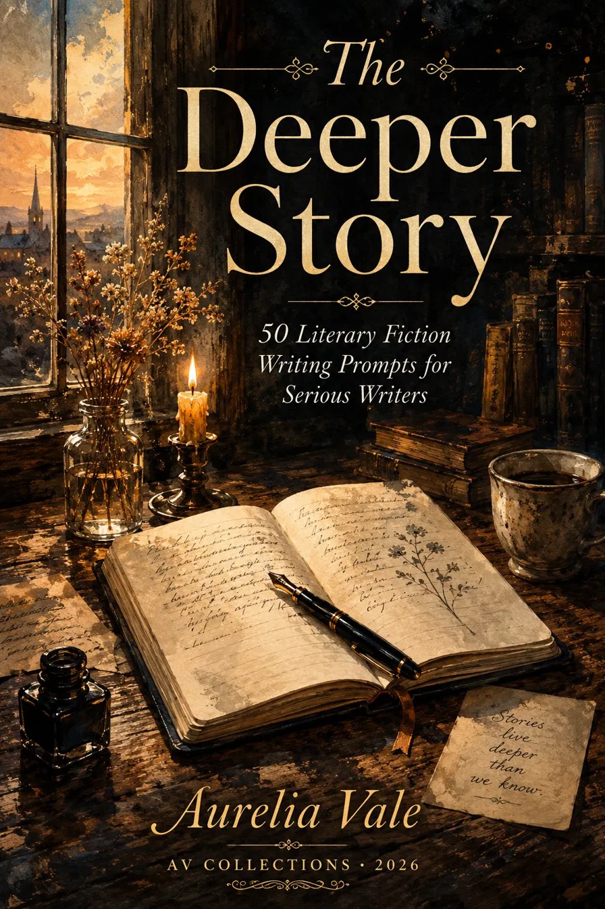

Stories live deeper than we know.
These prompts will take you there.
Literary fiction asks more of its writers. It asks for truth beneath the surface, for characters who breathe, for sentences that carry weight. It asks you to slow down, to look closer, to write the thing underneath the thing.
These fifty prompts were written for the writer who is ready for that. Not for someone looking for a quick plot idea — but for someone who wants to go deeper. Into character. Into meaning. Into the kind of story that stays with a reader long after the last page.